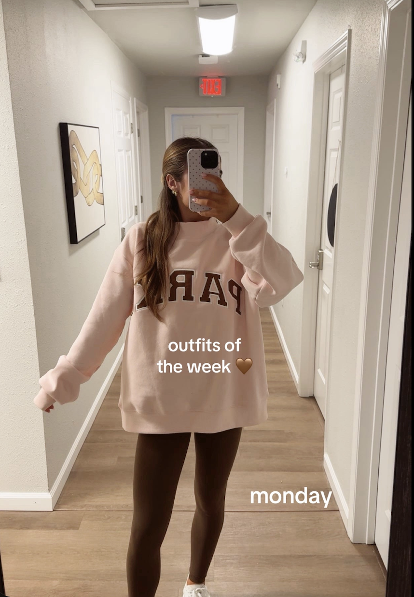

PARKE

PARKE
The brand most closely tied to the project's mock neck trend story.
TikTok fashion data project
How one cozy mock neck silhouette moved from outfit videos to brand obsession, repeated posts, and measurable engagement.


The story
Mock neck sweatshirts gained attention through influencer content, TikTok hauls, try-ons, styling videos, and "you need this" captions. As the same silhouette appeared again and again, the sweatshirt became more than a basic item. It became a visual signal that audiences could instantly recognize.



Creators style the sweatshirt in everyday outfit videos before the trend has a clear name or brand identity.
The same silhouette, captions, and neutral styling cues start showing up across more accounts.
Views, likes, and comments make the style feel bigger and help push more mock neck content forward.
Brand adoption
These logo-style labels and mock neck visuals make it easier to see how one silhouette travels from a specific brand moment into a wider fashion cycle.
The brand most closely tied to the project's mock neck trend story.
Mainstream retail showing how fast a social style can become broadly shoppable.
A more relaxed style identity that still adapts the same recognizable silhouette.
Premium basics and influencer styling turning the trend into an elevated wardrobe piece.
The problem
When the same product style, caption language, and visual presentation appear over and over again, it becomes harder to tell whether people are responding to the sweatshirt itself or to the feeling that everyone is already wearing it.
The big idea
By comparing general mock neck TikTok content with PARKE-related videos, this project tracks how visibility grows, how audiences respond, and how repeated interaction turns a sweatshirt into a social media trend.
Read the insights